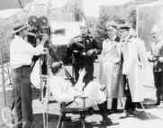
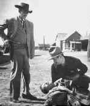
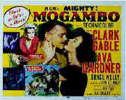
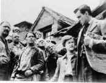

|
Interview With a Dead Director
By Stuart J. Kobak
"Of course we had our
techniques," John Ford went on to say, "and we had directors that focused on technique,
but the fact is characters and story got to come first. A lot of these young folks today, they have
so much of this technology thing going for them they forget to make a movie, tell a story, create a
world."
I had the sense that underneath the patch on his left eye, some sort of
second sight was fulminating. Grizzled and tough, there was a lyrical quality to the style in which
the master director held court. The fact that he had been dead for close to thirty years, however,
proved disconcerting at times. 
John Ford in the Director's chair
When I asked Ford what it was like to be dead, the
reality, or rather unreality of the situation gave me pause, but this was an opportunity I couldn't
let slip, sitting here in the most casual of situations discoursing on film with one of cinema's
true legends. "Dead," he said. "What's dead? Dead is when you've been making movies
all your life and suddenly they-the mean spirited guys with the money, I mean-tell you can't make
movies any more. That's dead. And the truth is maybe they're right. That's really dead. You can
call the state I'm in now anything you like, Sonny, but I can drink as much as I want and I don't
get drunk, I don't even get tired and I don't have that damning desire to do what I can't do
anymore. So whatever you call it, it ain't so bad."
I realized he had been swirling the ice cubes in his glass round and round
as he talked, punctuating each sentence with a huge gulp of whiskey and though we had been sitting
like this for some time now, it was true, the liquor had virtually no effect on him. Despite the
frequent tilts of the glass, the level remained mostly full. I never did get an explanation for the
bottomless glass. He wore a black baseball cap ,the title The Alamo burnished across the
front in gold, pulled tightly on his head even though we were indoors. As I watched Ford, I
realized he was sitting on a director's chair in front of my eleven foot wide projection screen. I
wanted to slip a DVD of The Searchers into my Sony 9000ES DVD player, fire up my stacked
Runcos to throw an image of this great film right onto Ford in front of the screen. The fact
that this was happening where I shared so many moments created by this great director was fitting.
He sat there waiting, drink in one hand and a handkerchief in the other, occasionally biting at a
corner of the handkerchief between swigs of booze.
One of Ford's films, My Darling Clementine, tells the tale of
Wyatt Earp and the gunfight at the O.K. Corral. I asked Ford 
Henry Fonda as Wyatt Earp in My Darling Clementine with
Ward Bond standing.
about some of the more recent attempts at assaying
the Earp legend on screen. I was shocked by his knowledgeable response. "Kurt Russell wasn't a
bad Earp in Tombstone. Sincere anyway. Did you notice that scene in the film when
Russell sits on the porch in front of the jailhouse, chair tilted back and legs rocking against he
hitching rail. By God that came right from "Clementine." Fonda did the same exact thing.
I gotta believe he watched that scene and tried for it. The movie didn't know where it wanted to
go, whether it was a shoot 'em up or a comedy. I can't say I cared for it, but I suppose it
was fun. Yeah, and that kid Val Kilmer was a pretty funny Doc Holliday. That Larry Kasdan Earp with
Kevin Costner, just too damned boring. The pacing was all wrong. It just ruined the
film. There was a lot of good detail and I like Costner. There's a quality about him that reminds
me of Fonda. Innocence, I suppose. But the director, Kasdan, just couldn't get it right. Nice
Holiday from Dennis Quaid. Interesting."
I asked Ford how and where he happened to see those films considering that
he now resided on the other side of reality. "I didn't just go to a movie theater and see
them. In a sense, I didn't sit through them at all, not in the way you understand. You see, there's
a sort of collective knowledge that's available here and there are things you just know. I know
those movies, okay."
Since he brought up the names of some contemporary actors, I pumped him
for his feelings about the actors he worked with on his films. "I made more than a few films
with the Duke-John Wayne, you know-and he wasn't bad at all. He was a very physical actor owing a
great deal to his enormous size. Ate a bit too much and pulled on the bottle pretty good."
John Ford directed his favorite friend in 13 starring roles. "I can't say he was the best
actor. He did what he did well and given the right material, the Duke could blow you away, believe
me. But I directed some of the best men in Hollywood. Fonda, Spencer Tracy, Eddie Robinson, Cooper,
Ty Power, Gable, Jimmy Stewart and that son-of-a-gun Cagney. All great actors. Fonda was something
special. He had those eyes. Luminous. They picked up the Kliegs. Big eyes, kinda watery. As a
director, I got so much out of those eyes."
When I asked Ford to give me the lowdown on Fonda and Mister Roberts
he nearly toppled the director's chair over as he sprung to his feet." I hit the piddling
son-of-a-bitch, that's what happened. He couldn't get a god-damned job in the movies no how and I
fight the money grabbers to get him the role and he's telling me how to direct all of a sudden.
Damn those eyes. Fonda wanted to work for me, he should've let me direct. There's only one director
on the set and if his word isn't gospel, its chaos. I shouldn't have hit him though. I tried to
apologize, but he didn't want to know from it." Fonda had this to say about Ford "He had
an instinctively beautiful eye for the camera. But he was also an egomaniac." Ford never did
finish directing Mister Roberts. A gall bladder attack exacerbated by the heavy drinking
landed him in the hospital and Mervyn Leroy was brought in by Warner Brothers to complete the film.
Mister Roberts is
available on DVD in a pretty good widescreen release from Warner.
Taking several quick gulps from the glass seemed to calm Ford down and he
continued talking in less emphatic terms. "I don't think there's any possibility of my being
thought of as a woman's director, but I had some good ladies in front of my camera. Claudette
Colbert, she was a pro. I like that film Drums Along the Mohawk. She and Hank Fonda were
real good in it. And I had Grace Kelly and Ava Gardner  together in Mogambo clambering after Gable. Shirley Temple was a doll. I directed
her twice. She was terrific when she was a little one in Wee Willie Winkie. She lost
something coming into womanhood. Still, I liked her in Fort Apache. You know who was a good
little actress. Vera Miles. Underrated that girl. And Jeannie Arthur was another pip of an actress
in The Whole Town's Talking." (This wry Ford comedy is a significant DVD MIA.)
I noted to Ford that he didn't even mention Maureen O'Hara whom he had
cast in five films. "I used her because she was right for the roles, but don't kid yourself,
she was no sweetheart on the set. She didn't like me and I didn't like her. I liked her with the
Duke though. Anyway, I didn't have to go home with her. "
"Making movies, it was great. It was like having this big, extended
family around you. The Westerns were especially fun. Out there on location. The stars in that
desert sky, they beat the stars and stench of Hollywood. Good beef on the grill, some music and
somebody always had a grand tale to tell. We didn't talk film at night. It was off limits. We
played games, dominoes, poker. Or maybe Danny Borzage would strike up a tune on the accordion and
we'd sing. He was the director Frank Borzage's brother. The camaraderie was special. I always
tended to use the same actors as much as possible. It was easy for the supporting roles. What a
pleasure. You know what you were going to get from them. They knew what you wanted. I had my buddy
Ward Bond and my brother Francis, big "Vic the Mick " McLaglen. I see them now whenever I
want now and we throw back the brews."
I told Ford, "You made a lot of terrific Westerns. Two of my favorite
movies are Ford Westerns. The Searchers and My Darling Clementine. The Searchers
could is available on DVD, but could use some restoration work. But I am sure that this strange
episode with you was instigated by my recently viewing the DVD of How Green Was My Valley.
There is so much love in that film. The coal mining village is an exquisite set. It's a stirring
film about family and the strength of man to endure." 
Walter Pidgeon and Roddy McDowall in How Green Was My Valley
Ford turned his head slightly, his profile suddenly
a shadow against the large white screen. The room was extremely quiet. Only moments passed, but it
seemed longer. Images from How Green Was My Valley entered my mind. I saw Walter Pidgeon and
Roddy McDowall on the hill overlooking the village, then the men trooping from the mines, singing,
swinging there arms after the day of labor. The director too must have been seeing visions of that
beautiful film. When he turned back to face me, behind the glasses and the gruff exterior of a hard
drinking man, I thought I could detect a tear." I love that film myself," he said. I love
that family. Donald Crisp was just great as old man Morgan. He got the Academy Award© for Best
Supporting Actor. And the kid, Roddy, was simply amazing as Huw Morgan. It wasn't the sort of
performance you could expect from a kid. I think he just turned thirteen during the filming. A lot
of the success of that film centered around Roddy's performance." Ford didn't mention that he
himself won the Best Director Oscar© for the film and it won a total of five Oscars© for its ten
nominations.
"When was the last time you saw The Grapes of Wrath," I
asked the director. "Anytime I want. It's all up here. Every frame. Every syllable. Right up
here," he said, tapping the top of his head. "Prerogative of my state of being, you might
say." 
Fonda and Darwell in Grapes of Wrath
I told him that after seeing his magnificent Welsh
depiction of family, hardship and the strength of man, I couldn't help wanting to see his look at
America in the throes of similar circumstances. Unfortunately, The Grapes of Wrath isn't
available on DVD. The laser disc of 'Grapes' didn't do justice to the cinematography vision. Much
of the exemplary lighting techniques of DP Greg Tolland lost the impact the original film must have
had. Ford was dismayed that The Grapes of Wrath had yet to get a DVD release.
"Sad. Tolland shot that so beautifully. had a lot of dark scenes lit by candles or kerosene
lamps. We lit the faces with a luminescence that almost lent them an ethereal quality. Very
special. I don't understand it at all how an industry could fail to protect the gold pile it built
up. It wouldn't have happened had they had these DVD things, I'll tell you. They would have had the
money machine putting movies on little discs and they'd be perfect forever."
Since the subject of lighting came up, I mentioned to Ford that
although he worked with a lot of different cameramen, there is still a sense of unity to the look
of many of his films. "MacDonald was simply fantastic on My Darling Clementine,"
Ford enthused. " Just because you make the ultimate decisions, it doesn't mean you don't take
advantage of the talent you're lucky enough to group around you. Tolland gave me great work on The
Long Voyage Home. Stunning high key photography. Mind you, it was what I wanted.
"Maybe my films have that look because I didn't move the camera more
than I had to. Take a look at the last few set-ups in The Searchers. Winton Hoch did a
majestic job of shooting that film for me. You got crazy old Mose Harper rocking on the porch. That
was a great role for Hank Worden. I think he made seven or eight movies with me. The camera's
still. The movement comes from him. Next there's a shot from the perspective of the house. Ethan
Edwards is carrying Debbie, delivering her to Martha and Aaron. Again, the camera is stationery as
Edwards approaches. He reaches the porch, puts her down, Debbie embraces her mother and then I pull
the camera back slowly framing the doorway in a black border. Still the same shot. Almost all the
movement is generated by the characters. Edwards turns and walks off to loneliness. The only reason
for the camera movement was to avoid another set-up and create a new frame without breaking the
power of the emotions." 
Fonda and Wayne in Fort Apache
Ford was getting fidgety. The frequency of gulps
continued to increase. Still, the glass maintained its level. I sensed frustration from Ford. I
pressed on and asked about fellow directors that he admired. "I like Raoul Walsh a lot,
probably because he wore an eye patch. You can't ignore Griffith. Everyone owes a debt to him. Bill
Wellman knew where to put the camera. Yeah, and Capra. He was a great story teller. Had a heart. He
had his fingers on the pulse beat of his audience too and don't short change that ability. Hawks
too. You gotta count Hawks in there."
Contemporary cinema was another matter. "There is too damn much
gratuitous violence. The more blood, the more box office and there are talented guys out there
succumbing to the basest instincts. Don't get me wrong. The last thing I believe in is censorship.
I just hate to see the quality of story telling go downhill. And all these camera cuties. You got
something to say by using the camera in a distinctive way, fine. But when it strutting like a
peacock in heat, you take away from the story. Most times, with the camera certainly, less is more.
"Listen, kid. I can't seem to empty this glass, I can't seem to get
drunk, and there are a few other things I can't do anymore. And if I stay here much longer with I
might just go nuts. I'm out of here. DVDs, huh." Before I had a chance to utter another
breath, there was no Ford, the big screen wasn't in front of me and the covers on my bed were
draped halfway on me and halfway on the floor as a sliver of light streamed in through the window
across my eyes forcing me to blink awake.
|
|
|


Reviews of affordable remote controls in the market place. Codes
and tips as well.

News, information, features about current films in theaters and in the
pipeline. Easy to use interface.
 Gary Morris's insightful publication Bright Lights
Film Journal turns the celluloid in films from a unique perspective. Click on the image above
for more pure movie views Gary Morris's insightful publication Bright Lights
Film Journal turns the celluloid in films from a unique perspective. Click on the image above
for more pure movie views
. Brad Lang continues to add more interesting to the extensive collection
at Classic Movies. Everything from actors and actress to your
favorite directors is linked at the site. Brad Lang continues to add more interesting to the extensive collection
at Classic Movies. Everything from actors and actress to your
favorite directors is linked at the site.

DVD
Demystified makes it all clear.The official Internet DVD FAQ for the rec.video.dvd
Usenet newsgroups.

The Movie Poster
Archive includes extensive poster images from the films of stars like Susan Hayward, Kirk Douglas,
Katharine Hepburn and many more. Our
featured star is Edward G. Robinson

Selections from the feature archive include articles on Akira Kurosawa,
Frank Darabont, Blonde Bimbos, Hollywood Street Gangs,
or Vietnam: The Hollywood Pariah,
and many more...
Robert A.
Harris

Tilting at Hollywood
He's part of the dynamic duo that restored Lawrence
of Arabia, Spartacus, My Fair Lady and Vertigo. Harris rides a white horse into the for the cause
of preserving our film legacy. Click on the image to read more.

Movie Rage: Death in the Aisles
Everyone knows what it feels like to get angry at the movies these days. Here's a humorous but
not so delightful view of big screen misery.
Redeeming
the Writer:
A Conversation with Frank Darabont

Check out these selections from our DVD Review
Archive. New releases are constantly in our face, but catalog gems should not be forgotten.

Need a daily fix of movie
quotes. Reel Quotes Newsletter has the answer. Click on the Reel Quotes symbol for more.
 Black DVD Online is a new site dedicated to
black film content on DVD. The commendable enterprise is hosted by Webmaster Samuel L. McLemore,
Jr. and presented in an attractive interface Black DVD Online is a new site dedicated to
black film content on DVD. The commendable enterprise is hosted by Webmaster Samuel L. McLemore,
Jr. and presented in an attractive interface

Irreverent DVD views and links to many sites. The big
question is "Who is Uncle Herbie?"

Fine reviews, features and news on DVD. The Big Picture
has been doing DVD as long as anyone. Jeff McNeal and Bob Banka feed on a steady diet of DVDs.
DVDRAMA
One of France's outstanding DVD resources. Par le vous DVD?
 It rains
a lot in Portland, so DVDcorner.net
provides an umbrella of entertainment with lots of DVD reviews and DVD news. Check out the monthly
give-a-ways too!. It rains
a lot in Portland, so DVDcorner.net
provides an umbrella of entertainment with lots of DVD reviews and DVD news. Check out the monthly
give-a-ways too!.

The Cinema Laser
A home grown magazine for laserphiles that has been publishing for a number of years and has
embraced DVD in a big way. Lots of helpful information.
 Large variety of movie posters for sale now specializing in Polish and Japanese paper.
Easy interface and a Soho gallery storefront. Large variety of movie posters for sale now specializing in Polish and Japanese paper.
Easy interface and a Soho gallery storefront.
 Across
the Bridge Posters won't sell you the Brooklyn
Bridge, but have a look at their selection of movie posters. Across
the Bridge Posters won't sell you the Brooklyn
Bridge, but have a look at their selection of movie posters.
Bruce Hershenson Move Posters

Bruce Hershenson has been running
successful movie poster auctions for a number of years, most notably for Christies. His site
includes many images and a huge variety of posters for sales from his periodic
catalogs.
Choko
Movie Posters

The popular Paris movie poster store
makes it's way to the Internet with an outstanding selection of French Movie Posters. Many
beautiful images on display in a searchable data base.

You won’t want to miss the online iF Magazine. You may have guessed iF stands for
independent film.
 Frank Darabont is the cover interview in the current online issue of Fade-In Magazine.
Check it out along with other savvy features of this excellent book Frank Darabont is the cover interview in the current online issue of Fade-In Magazine.
Check it out along with other savvy features of this excellent book
. The online site for Film Comment Magazine
includes all the information you need to know about cinematic events sponsored by the Film Society
of Lincoln Center. The online site for Film Comment Magazine
includes all the information you need to know about cinematic events sponsored by the Film Society
of Lincoln Center.
|